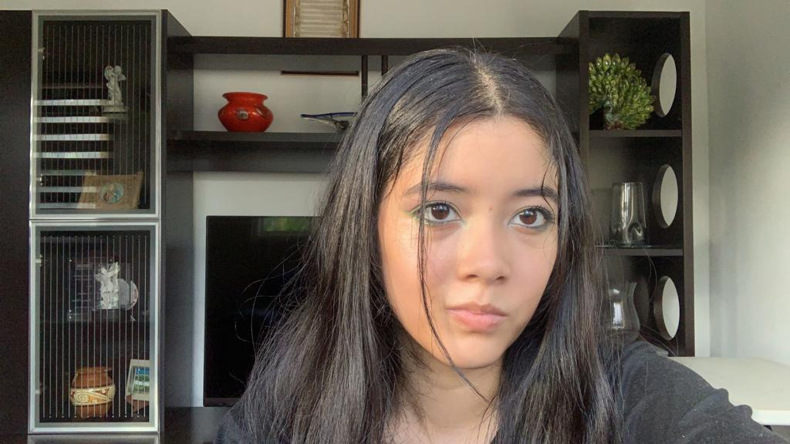

Blog Personal
¡Hola a todos! Soy Laura Santana, y actualmente estoy cursando la carrera de Ciberseguridad. A mis 19 años, he tenido el privilegio de crear esta página web como parte de mi Parcial N°1 de Desarrollo Web. Esta plataforma contiene valiosa información sobre la seguridad en las redes sociales, un tema que elegí con especial interés. Vivimos en una época en la que la inseguridad y los riesgos en las redes sociales son una preocupación creciente. Cada día surgen nuevos desafíos y amenazas, lo que subraya la importancia de estar preparados y protegidos.

"La desconfianza es la madre de la seguridad"Aristófanes